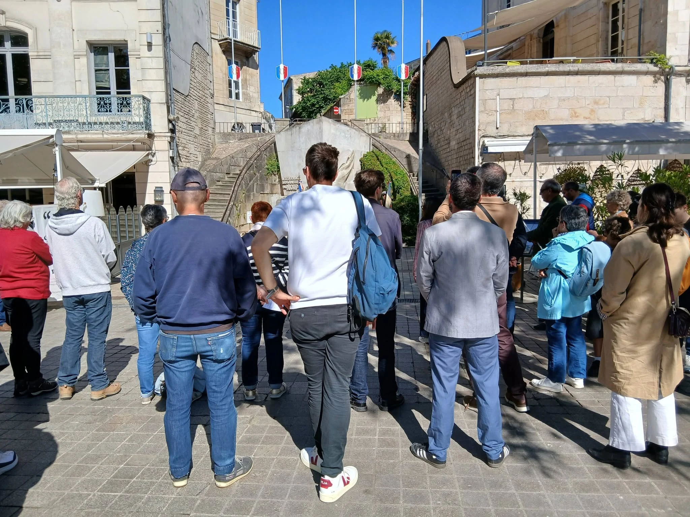
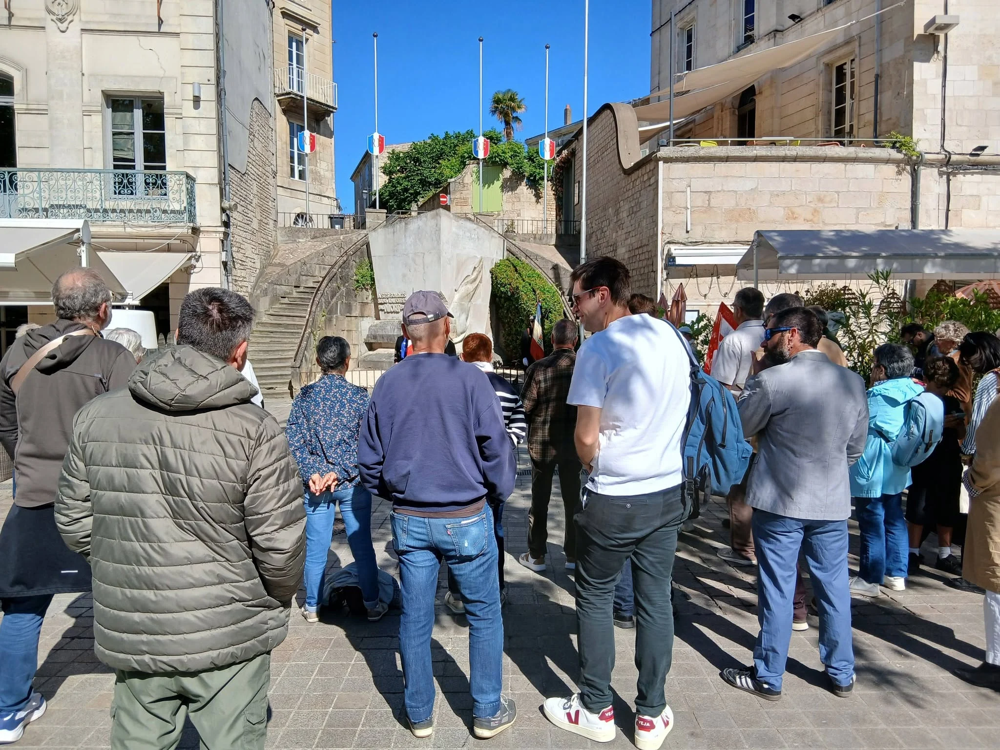
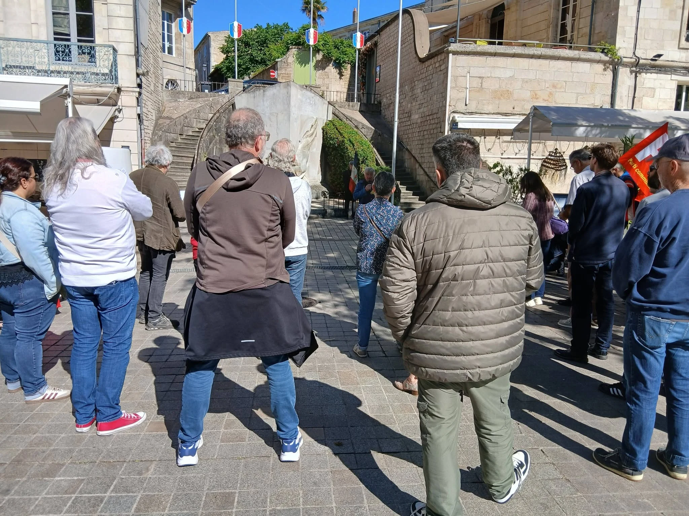
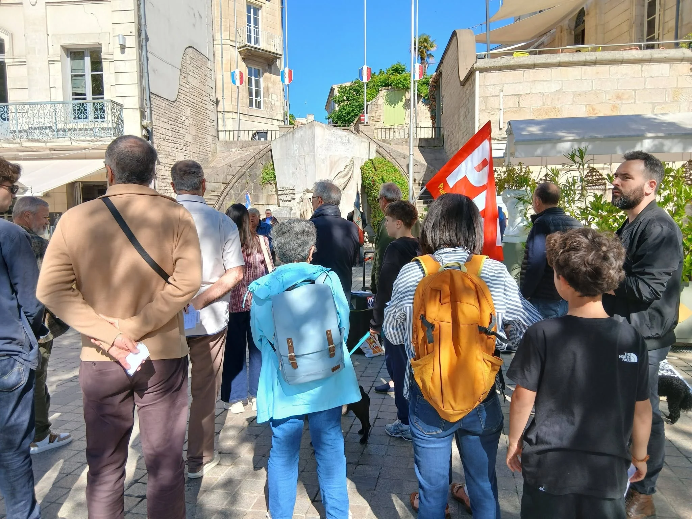
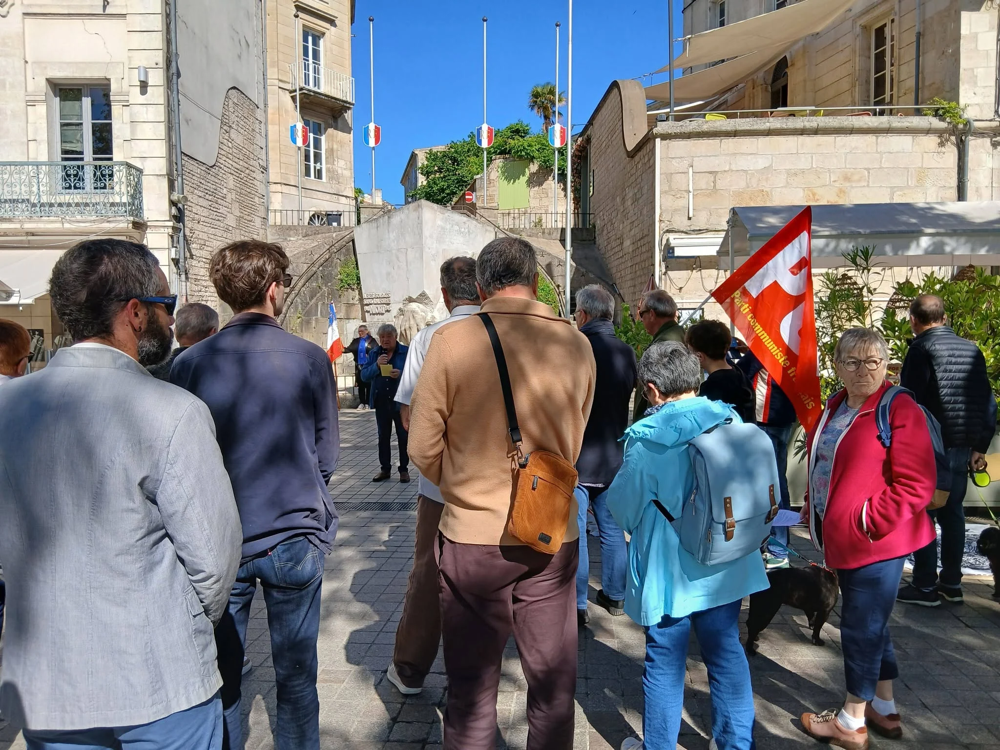

Reportage photo
Le 8 Mai à Niort en images
Date de mise à jour indiquée par Facebook · 8 mai 2026
Repères éditoriaux
Nous nous sommes retrouvés à Niort pour commémorer la victoire sur le nazisme. Les photos montrent notre rassemblement. Nous y avons réaffirmé notre engagement pour la paix et la fraternité entre les peuples.
Texte de la publication · PCF Niort
Les communistes de Niort sont au rendez-vous pour commémorer la victoire du 8 Mai 1945 sur le nazisme et les fascismes. Plus que jamais, mobilisés pour la grande paix humaine et la fraternité entre les peuples du monde.





Sources
PCF Niort · publication relayée par le PCF 79 · bibliothèque Facebook · AR-0002-FB-00782
À lire aussi · Le 8 Mai à Niort, l’hommage de Frédéric Giraud en vidéo